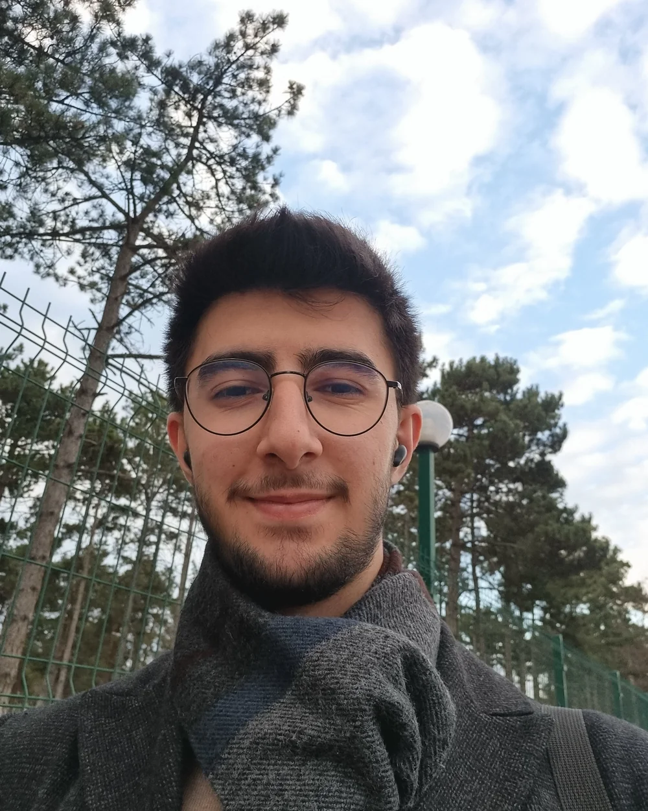

Otonom sistemler
ROS 2, PX4 ve Gazebo ile algılama, takip ve uçuş senaryoları.
Bilgisayar Mühendisliği · Abdullah Gül Üniversitesi
Yapay zekâ, bilgisayarlı görü ve otonom sistemler odağında çalışan bir bilgisayar mühendisliği öğrencisiyim. Araştırma projelerinde ve ürün geliştirme süreçlerinde sade, güvenilir çözümler üretmeye odaklanıyorum.

Bilgisayar mühendisliği öğrencisi
TR · EN · DEOyun alanı
PLAY → LEARN
3 GAMES · 6 STATIONS
1 PORTFOLIO
CV okumak yerine oynayarak tanış: üç oyun, altı istasyon, tek bir portfolyo. Her oyun bana dair bir şey anlatıyor.
Bu sayfada öğrendiklerini sekiz soruyla test et.
Cevabı tıkla ya da 1 · 2 · 3 tuşlarına basCevaba dokun
Kısaca
BUILDING SYSTEMS
THAT PERCEIVE,
LEARN & MOVE.
Çalışmalarımın merkezinde gerçek dünya problemlerini yazılım, algılama ve otonomiyle çözmek var. Akademik araştırma ile uygulamalı geliştirmeyi birlikte yürütüyor; öğrendiklerimi çalışan sistemlere dönüştürmeye çalışıyorum.
Deneyim ve eğitim↘ROS 2, PX4 ve Gazebo ile algılama, takip ve uçuş senaryoları.
Seçili proje
Gerçek zamanlı nesne tespiti, takip ve veri füzyonu.
Dil desteği
Web, mobil ve servis katmanlarında uçtan uca ürün geliştirme.
Yolculuk
FIELD NOTES
RESEARCH LOG
2021 — NOW
KEPSAŞ
Staj programı boyunca kurumun çalışma süreçlerini ve enerji sektörünün işleyişini yerinde gözlemleyerek mesleki deneyim kazandım.
TÜBİTAK Lisans Araştırma Destek Programı
GNSS ve gerçek zamanlı görüntü verisini birleştirerek sabit kanatlı İHA'ların tespit ve takibine yönelik bir sistem geliştirdim.
Abdullah Gül Üniversitesi
Yapay zekâ ve IoT destekli sabit kanatlı İHA'larla iş birlikli görevler; LoRa/GSM tabanlı haberleşme ve otonom görev akışları üzerine çalışıyorum.
B&B Bilişim
Bilgisayarlı görü projeleri ile C# ve ASP.NET Core MVC geliştirme süreçlerinde görev aldım.
AGU TEKNOFEST Savaşan İHA Takımı
Nesne tespiti ve takibi, PX4–Gazebo simülasyonu ve ROS 2 tabanlı uçuş testlerinin geliştirilmesini koordine ettim.
Seçki
SELECTED BUILDS
RESEARCH + CODE
OPEN SOURCE
GNSS ve görüntü işleme verilerini birleştirerek gerçek zamanlı tespit, takip ve konum tahmini yapan TÜBİTAK 2209-A projesi.
GitHub'da görüntüle↗İki İHA'nın iş birlikli görev yürüttüğü; görüntü işleme, uçuş kontrolü ve düşük gecikmeli iletişimi bir araya getiren BAP çalışması.
GitHub'da görüntüle↗Video analitiği için RT-DETR tabanlı gerçek zamanlı nesne tespiti ve yeniden kimliklendirme deneyi.
GitHub'da görüntüle↗CV analizi, iş eşleştirme ve PDF işleme adımlarını tek akışta birleştiren yapay zekâ destekli web uygulaması.
GitHub'da görüntüle↗Elektrik perakende satış tekliflerini, ödeme planlarını, finansmanı ve gerçekleşen sonuçları modüler hesaplama motorlarıyla bir araya getiren enerji uygulaması.
GitHub'da görüntüle↗Piyasa Takas Fiyatı verisini işleyip XGBoost ve GPR ile 24 saatlik tahmin ve belirsizlik üreten, izleme katmanına sahip uçtan uca MVP.
GitHub'da görüntüle↗Kıyafet görsellerini işleyip 3D modele dönüştüren ve avatar üzerinde yapay zekâ destekli sanal deneme akışı sunan asenkron uygulama.
GitHub'da görüntüle↗Aynı kronolojik veri ayrımı üzerinde naive baseline, LSTM ve GRU modellerini karşılaştıran tekrarlanabilir zaman serisi deneyi.
GitHub'da görüntüle↗Araç kutusu
Seçili notlar
Sabit kanatlı İHA takibi araştırma projesi.
NLP ve veri ön işleme ile adres çözümleme çalışması.
Ortaokul ve lise öğrencilerine yapay zekâ okuryazarlığı ve Python atölyeleri.
İletişim
Yeni projeler, araştırma iş birlikleri veya başlangıç seviyesi fırsatlar için benimle iletişime geçebilirsiniz.